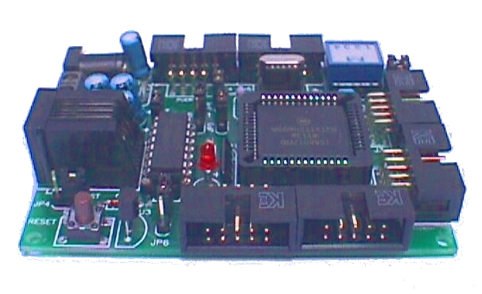
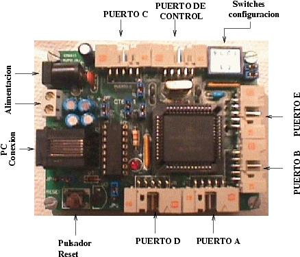
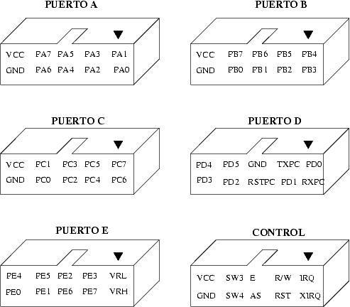
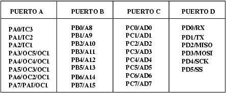

La CT6811 se alimenta a través de un conector de tipo Jack o conectando los cables a la clema de alimentación. La alimentación nominal es de 4.5 - 5.5 voltios, aunque se puede alimentar a 6v, mediante cuatro pilas de 1.5 voltios.

| TARJETA CT6811 |
| [Introducción] | [caracteristicas] | [Autores] | [Licencia] | [Historia] | [Puertos] | [Alimentación] | [Software] | [Download] | [Links] | [Noticias] | [Agradecimientos] |

La CT6811 es una tarjeta para el desarrollo de aplicaciones hardware y software basadas en el microcontrolador 68HC11. No solo sirve para el desarrollo de prototipos, sino que también está pensada para funcionar en sistemas terminados. Se trata de una tarjeta muy versátil que se puede emplear como:
Se trata de una placa MULTIPLATAFORMA, que se puede usar tanto en máquinas Linux como Windows.

La CT6811 es la evolución de la planta del micro del Sistema Tower, y hereda de él su reducido tamaño y los conectores acodados de BUS para
su conexión en torre. Como mejoras se introdujeron las siguientes:
Las letras "CT" significan "Compatible Tower", colocándose en todas las placas que tienen las mismas medias que la CT6811 y que se pueden conectar en "torre".
La CT6811 la realizaron los autores cuando estaban en 4º de carrera en la ETSI de Telecomunicaciones de la UPM. Entonces eran conocidos como Grupo J&J. Las fechas de los diferentes hitos son las siguientes:
La tarjeta CT6811 saca al exterior todos los pines del 6811, a través de conectores acodados para cable de tipo bus de 10 hilos. En todos los conectores, salvo el Puerto D y E, se encuentran VCC y GND. Esto es muy útil porque permite conectar periféricos y que se alimenten directamente a través del cable de BUS, sin tener que tirar otro cable.

Los pines del los puertos del 6811 tienen otras funciones, no solo de entrada/salida digital. En la siguiente figura se muestran los nombres de las otras funciones:

La CT6811 se alimenta a través de un conector de tipo Jack o conectando los cables a la clema de alimentación. La alimentación nominal es de 4.5 - 5.5 voltios, aunque se puede alimentar a 6v, mediante cuatro pilas de 1.5 voltios.
| TARJETA CT6811 |
| ct6811-manual.pdf (549KB) | Manual de usuario de la tarjeta CT6811 |
| ct6811-esquema.pdf (35K) | Esquemótico |
| ct6811.pcb (61KB) | PCB, para Tango Versión 2.0 |
| Ct6811_pcb.pdf (51KB) | PCB, en formato PDF. Cara de arriba y abajo. |
| ct6811-serigrafia.pdf (17KB) | PCB, en formato PDF. Serigrafía. |
| ct6811-ref-rap.pdf (70KB) | Referencia rápida para la CT6811: puertos, alimentación, etc... |
| ct6811-ref-rap-src-0.1.tgz (623KB) | Referencia rápida para la CT6811. Fuentes del documento (Lyx, Xfig) |
| SOFTWARE PARA LINUX |
| cts-1.4-1.i386.rpm (121KB) | Librería CTS. Versión 1.4 |
| cts-1.4.tgz (250KB) | Librería CTS. Fuentes. Versión 1.4 |
| cts-1.4.pdf (154KB) | Documentación de la librería CTS-1.4. API y ejemplos de uso |
| cttools-1.4.tgz (168KB) | CTTOOLS. Versión 1.4. Fuentes y ejecutables |
| cttools-1.4.-1.i386.rpm (86KB) | CTTOOLS. Versión 1.4. Ejecutables |
| gdown-1.4.0.tgz (37KB) | Carga de programas para Gnome 1.4. Cristina Doblado Alcázar. |
| as11.tgz (30KB) | Ensamblador Freeware de Motorola para el 6811 |
| as11-src.tgz (24KB) | Ensamblador Freeware de Motorola para el 6811. Fuentes |
| asref.txt(75KB) | Documentación sobre el AS11. (c) Motorola |
| ras-0.1.2-1.i386.rpm (26KB) | Ensamblador GPL para 6811, compatible con 6811. Por Javier de Lope |
| ras-0.1.2.src.tgz (22KB) | Fuentes del RAS. Por Javier de Lope |
| SOFTWARE PARA MSDOS/WINDOWS |
| ctload-1.0.3.zip (205KB) | Entorno Windows para trabajar con la CT6811. Por Javier de Lope |
| ctload-1.0.3.src.zip (41KB) | Fuentes de CTLOAD para Windows. Por Javier de Lope |
| ctdown.zip (50KB) | Software base para enviar y recibir caracteres, modificar el DTR y los Baudios. Andrés Prieto-Moreno |
| dllcts.zip (124KB) | DLL para acceder al puerto serie (Version Alfa). Andrés Prieto-Moreno |
| ctwin.zip (51KB) | Control del DTR a través de la DLL "dllcts". Andrés Prieto-Moreno |
| ctserver.zip (203KB) | Librería CTS para MS-DOS (GPL). Desarrollo de aplicaciones para la CT6811. Juan González |
| ct6811-msdos.zip (702KB) | Control y programacion de las tarjetas CT6811 y CT293 (Fuentes y ejecutables) |
| ras-0.1.2.zip (311KB) | RAS. Ensamblador GPL para 6811. Por Javier de Lope |
| as11.exe (20KB) | Ensamblador Freeware de Motorola para el 6811 |
| asref.txt(75KB) | Documentación sobre el AS11. (c) Motorola |
| EJEMPLOS PARA LA CT6811 |
| ledp.asm | ledp.s19 | Ejemplo que hace parpadear el led |
| ledpe.asm | ledpe.s19 | Ejemplo del ledp para la eeprom interna de un A1 |
| ledpe2.asm | ledpe2.s19 | Ejemplo del ledp para la eeprom interna de un E2 |
| scihola.asm | scihola.s19 | Se envía una cadena por el puerto serie al pulsarse una tecla |
| menu.asm | menu.s19 | Programa interactivo por el puerto serie |
| cable.asm | cable.s19 | Programa para probar los cables de tipo bus |
| inter.asm | inter.s19 | Ejemplo de interrupciones de un programa en EEPROM para un A1 |
| pa7.asm | pa7.s19 | Ejemplo del puerto A: Configuración del bit PA7 |
| pa0.asm | pa0.s19 | Ejemplo del puerto A: Reflejar el estado del PA0 en el PA6 |
| pb0.asm | pb0.s19 | Ejemplo del Puerto B: Activación del bit PB0 |
| puertob.asm | puertob.s19 | Ejemplo del Puerto B: Activación rotativa de los bits del puerto B |
| puertoc.asm | puertoc.s19 | Ejemplo del Puerto C: Configuración de bits para entrada y salida |
| puertod.asm | puertod.s19 | Ejemplo del Puerto D: Configuración de bits para entrada y salida |
| puertoe.asm | puertoe.s19 | Ejemplo del Puerto E: Lectura del bit PE0 |
| sciconf.asm | sciconf.s19 | Ejemplo del SCI: Configuración |
| eco.asm | eco.s19 | Ejemplo del SCI: Se hace eco de todo lo recibido |
| sciint.asm | sciint.s19 | Ejemplo del SCI: Envío mediante interrupciones |
| maestro.asm | maestro.s19 | Ejemplo del SPI: Envío de un caracter recibido por el SCI a través del SPI |
| esclavo.asm | esclavo.s19 | Ejemplo del SPI: Se envía por el SCI lo que se recibe por el SPI |
| timer.asm | timer.s19 | Ejemplo del temporizador principal: Lectura de su valor |
| timer2.asm | timer2.s19 | Ejemplo del temporizador principal: Modificación de la frecuencia |
| overflow.asm | overflow.s19 | Ejemplo del temporizador principal: Uso de la interrupción de overflow |
| rti.asm | rti.s19 | Ejemplo de interrupciones de tiempo real: Cambia estado del led cada 32.7ms |
| rtii.asm | rtii.s19 | Ejemplo de interrupciones de tiempo real: Idem mediante interrupciones |
| delay.asm | delay.s19 | Ejemplo Comparadores: Pausa múltiplo de 10ms (con comparador 5) |
| tempo.asm | tempo.s19 | Ejemplo Comparadores: Temporización por interrupciones (con comparador 4) |
| ondcuad.asm | ondcuad.s19 | Ejemplo Comparador: Generación señal cuadrada (comparador 2) |
| ondcuad2.asm | ondcuad2.s19 | Ejemplo Comparador: Idem mediante interrupciones |
| cap.asm | cap.s19 | Ejemplo Capturador: Interrupciones capturador 3 |
| cap2.asm | cap2.s19 | Ejemplo Capturadores: Interrupciones capturador 2 |
| acum.asm | acum.s19 | Ejemplo Acumulador de pulsos: Interrupciones |
| acum2.asm | acum2.s19 | Ejemplo Acumulador de pulsos: Interrupción de overflow |
| irq.asm | irq.s19 | Ejemplo de la interrupción IRQ |
| pad.asm | pad.s19 | Ejemplo del conversor A/D |
| bootstrp.asm | bootstrp.s19 | Programa bootstrap, de Motorola (Almacenado en ROM) |
| ejemplos-6811.zip (33KB) | Todos los ejemplos anteriores |